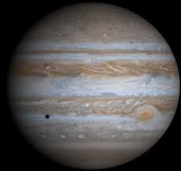

كوكب المشتري
المشتري هو خامس كوكب في المجموعة الشمسية وهو أكبرها، ويتميز بوجود بقعة حمراء كبيرة وهي عبارة عن عاصفة عملاقة.

حقائق عن المشتري
- المسافة من الشمس: حوالي 778.5 مليون كيلومتر
- القطر: حوالي 142,984 كيلومتر
- المدة الزمنية لدوران حول الشمس: حوالي 12 سنة أرضية
- درجة الحرارة: تصل إلى -145 درجة مئوية
النظام الشمسي